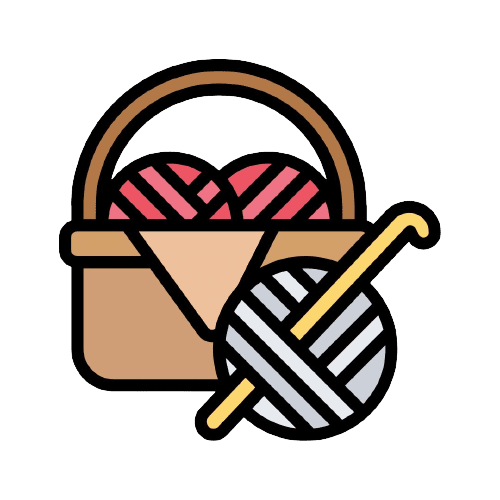

Corazones Solidarios
Brindamos espacios de contención y actividades dirigidas a la solidaridad, a través de programas y proyectos que promueven el desarrollo material y espiritual de las familias, promoviendo el trabajo y donde prima el derecho a la vida, a la salud, a la integridad y a la dignidad de cada persona.
#TodosTenemosAlgoParaDar
 Mas de 700 cajas solidarias entregadas
Mas de 700 cajas solidarias entregadas del Proyecto "Familias apadrinadas"
 Mas de 130 familias apadrinadas
Mas de 130 familias apadrinadas
 Mas de 36000 prendas entregadas
Mas de 36000 prendas entregadas en el Ropero solidario


Corazones Solidarios
Somos una Asociación sin fines de lucro que anhela una ciudad mejor para todos. Nos esforzamos diariamente para lograr nuestro objetivo y no nos conformamos con menos. Creemos en el esfuerzo, la dedicación y el compromiso de todos los argentinos para generar un cambio en nuestra sociedad y hacer de nuestro país un lugar más justo y solidario. ¡Únete a nosotros y se parte del cambio que queremos ver en nuestra comunidad!
TRABAJAMOS DIARIAMENTE
Taller de telar
Técnica de tejido en telar

Taller de telar:
El objetivo es enseñar la técnica del "tejido en telar" para confeccionar frazadas de manera artesanal. Las clases son dictadas por nuestra colaboradora, Liliana Mansilla, en la sede de la asociación. Además, a través del proyecto "Abrigando corazones", se capacita a otras tejedoras para colaborar en la confección de cuadrados solidarios adicionales..
DonarPROXIMAMENTE
proyecto en marcha
PROXIMAMENTE
Proyecto en marcha.
Una torta para mi cumple
Los cumpleaños del trimestre.

Una torta para mi cumple
Este proyecto tiene como objetivo crear espacios de contención y participación para niños de distintos merenderos de la ciudad. Trimestralmente, se distribuyen tortas en diferentes merenderos y grupos para celebrar los cumpleaños ocurridos durante el trimestre, permitiendo que los niños que asisten puedan disfrutar de este momento especial.
DonarApoyo escolar
Acercar a distintos merenderos el apoyo escolar
Apoyo escolar
El proyecto liderado por la docente Daniela Arguello tiene como objetivo proporcionar apoyo escolar a niños con dificultades de aprendizaje en diferentes merenderos. La docente dicta las clases de forma gratuita para brindar una educación adicional a los niños que necesitan ayuda en su aprendizaje.
DonarTe ayudamos a emprender
Emprende tu propio negocio.

Te ayudamos a emprender
El objetivo de este proyecto es proporcionar a las familias de La Calera los recursos necesarios para que puedan establecer su propio negocio familiar. Una vez que hayan establecido su emprendimiento, se les pide que devuelvan la materia prima recibida a la asociación, de manera que se pueda ayudar a otras familias a emprender. De esta forma, se busca fomentar la cultura emprendedora y el espíritu de solidaridad en la comunidad
DonarFamilias Apadrinadas
Ayudamos a más de cien familias en situación vulnerable.

Familias Apadrinadas
El proyecto de apadrinamiento ha estado en funcionamiento desde 2018, y su objetivo es conectar a familias que desean colaborar (padrinos) con familias en situación vulnerable (apadrinadas) en tres momentos del año: en la entrega de la caja escolar, en la entrega de la caja de invierno y en la entrega de la caja navideña. Además, mantenemos un contacto permanente con las familias para brindarles apoyo y contención en todo momento.
DonarTejido Solidario
Se entregan frazadas a distintas familias
Tejido Solidario
Contamos con un grupo de más de quince tejedoras que han estado llevando adelante el proyecto "Abrigando Corazones" desde 2019. En la campaña de 2022, entregamos más de 60 frazadas a las familias que necesitaban abrigo en nuestra comunidad. Además, contamos con el programa "Lo tejí yo", donde enseñamos a las personas cómo confeccionar sus propias frazadas, lo que les permite desarrollar habilidades y fomentar la cultura de la autogestión.
DonarRopero Comunitario
Pueden acercarse a buscar ropa, calzado y artículos del hogar sin costo alguno.
Ropero Comunitario
Coordinamos un Ropero Comunitario que se encuentra ubicado en la calle Saúl Moyano 309, en La Calera, donde los vecinos pueden acercarse para obtener ropa, calzado y artículos del hogar sin costo alguno. Durante todo el año, recibimos, catalogamos y ordenamos las donaciones que nos llegan para poder brindar una atención ordenada y eficiente a quienes lo necesiten.
Donar
Entidades que confían en nosotros


Opiniones

Es un grupo donde se reúnen con los mas altos valores sociales como son la solidaridad empatía, respeto, compromiso,generosidad,felicitaciones a todos los que aportan su granito de arena para construir un mundo mejor.
Daniela Arguello

Un lugar donde se puede ir a retirar ropa, hacer catarsis,compartir emociones y si colaboras, te llevas tu frazada terminada Como siempre sus organizadores impecables
Liliana Mansilla
Una Gente hermosa , Que Trabaja 24/7 Para Brindar Su Ayuda A Las Personas Que Mas Lo Necesitan ..Gracias! por su compromiso ,Generosidad Y Empatía
Luciano Pettit

Excelente el trabajo que hacen por quienes más lo necesitan en La Calera! Felicitaciones a todo el equipo de Corazones Solidarios
Fernando Rambaldi
excelente espacio solidario,donde podes retirar en forma gratuita ropa,calzado,etc participar de distintos proyectos y emprendimientos
Marina García

Felicitaciones a todo el gran equipo de Corazones Solidarios! ☺️❤️ Podés acercarte a conocer nuestros proyectos y actividades. Te esperamos!
Maria Belen Tiengo
Excelente Asociación, muy comprometida con la sociedad de la ciudad, #TodosTenemosAlgoParaDar, Apoyemos y colaboremos con esta gran asociación
Gerardo Pettit
.png)